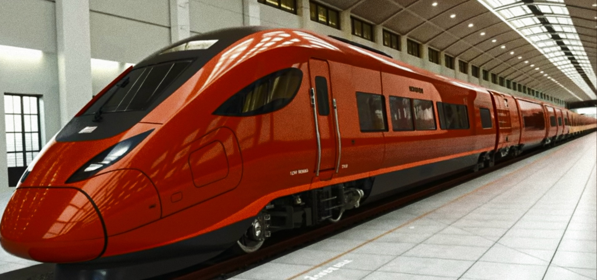

About Me
I'm a dedicated Wikipedia contributor and researcher focused on India's emerging high-speed rail projects, including BEML Train 28 (B28) and key corridors.
Explore Full Research Hub →
Featured: BEML B28 & High-Speed Rail

Railway Research Highlights
- BEML Train 28 (B28) — Design & Testing
- Varanasi–Siliguri HSR Corridor Studies
- Technical Documentation & Wikipedia Contributions
- High-Speed Rail Technology Insights
View Full Research →
Resources & More
- Latest Updates & News
- Contact for Collaboration